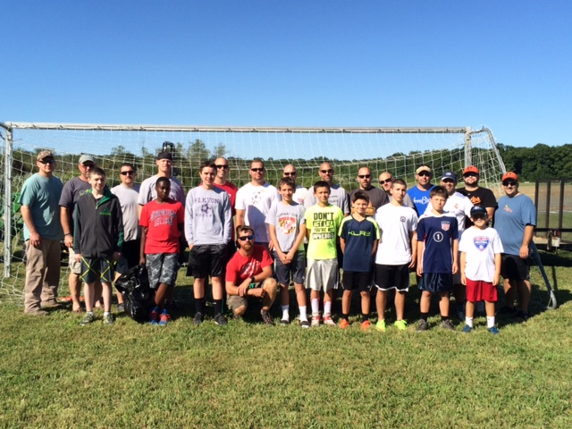

Mission statement
Cecil Soccer League is committed to maximizing the potential of all athletes and dedicated to developing in each player a love of soccer. We will encourage positive character development by teaching the fundamentals of Sportsmanship, Teamwork, Self-Improvement, Respect, Discipline and Exercise. We will provide training and educational opportunities for players, coaches and referees participating in Cecil Soccer League. We strive to build a safe family-oriented soccer experience for our players through Teams (Representative & Recreational), Tournaments, Leagues and Soccer Camps. Above all else, Cecil Soccer League is about having fun while competing in the game we love, SOCCER!
Who are we?
We are an established soccer league located in Cecil County, MD. Whether you are interested in a Recreational, Competitive and/or Winter (indoor) program, we would love for your family to become part of our family!
Our purpose
Cecil Soccer League is organized exclusively for charitable and educational purposes, to promote sportsmanship and the development of youth soccer players through competition within and outside the State of Maryland. To do that, the league:
- Runs recreational league play for the youth of Cecil County and the surrounding area
- Forms competitive teams that play in leagues and tournaments
- Recruits and trains volunteer coaches
- Provides and maintains fields, uniforms, and equipment
- Hosts tournaments and camps
Our history
Cecil Soccer League was recognized as a 501(c)(3) tax-exempt organization in 1991. In 2002 the league entered a long-term lease and management agreement with Cecil County to plan, build, maintain, and operate the soccer facilities at Chesland Park, which became the Chesland Soccer Complex. Volunteers have built and cared for the complex ever since.
Organization details
- Legal name
- Cecil Soccer League, Inc.
- Program name
- Cecil FC
- Type
- Maryland nonprofit corporation
- Tax status
- 501(c)(3) tax-exempt
- EIN
- 52-1311485
- Physical address
- Chesland Soccer Complex
401 Elk Forest Rd
Elkton, MD 21921 - Mailing address
- P.O. Box 1406
Elkton, MD 21922-1406 - Participants
- About 1,200 per year
- Websites
- cecilsoccer.org
cecilfc.org
Refund policy
At Cecil Soccer League it is our goal to provide the best soccer experience possible. We understand that situations occur after a player registers where the player is unable to participate due to financial, medical, or personal conflicts.
- All refund requests must be made in writing by email to info@cecilsoccer.org. Include the player’s name and date of birth, the registering parent’s name, email, and phone, and the reason for the request.
- All refunds are subject to a $10 processing fee per player.
- Requests received before open registration closes are considered for up to 100% of the registration fee, less the fee.
- Requests received after registration closes but before opening day are considered for up to 50%, less the fee.
- No refunds after the first game of the season. Special circumstances (injury, a move, etc.) are considered case by case.
- No refunds for not being placed on a requested team, or because practice times or locations are inconvenient.
The Executive Board reviews each request and provides a resolution.
Check policy
By paying with a check, you agree that if your check is dishonored or returned for any reason, you authorize us to re-present it electronically (or by paper draft) to your bank for the amount of the check plus any fees permitted by state law.
Checks can be mailed to:
Cecil Soccer League, Inc.
P.O. Box 1406
Elkton, MD 21922-1406
